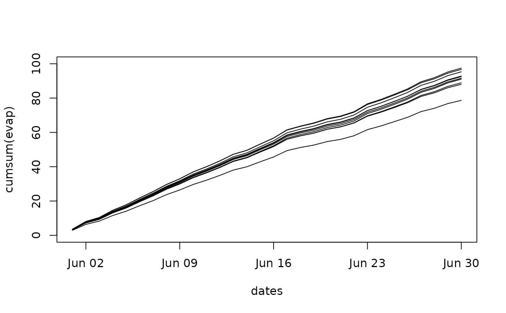

Make a multirun simulation using a set of variable input parameters.
Source:R/mrunLWFB90.R
run_multi_LWFB90.RdWrapper function for run_LWFB90 to make multiple simulations
parallel, with varying input parameters.
Usage
run_multi_LWFB90(
paramvar,
param_b90,
paramvar_nms = names(paramvar),
cores = 2,
show_progress = TRUE,
...
)Arguments
- paramvar
Data.frame of variable input parameters. For each row, a simulation is performed, with the elements in
param_b90being replaced by the respective column ofparamvar. All parameter names (column names) inparamvarmust be found inparam_b90. See sectionParameter updating.- param_b90
Named list of parameters, in which the parameters defined in
paramvarwill be replaced.- paramvar_nms
Names of the parameters in
paramvarto be replaced inparam_b90.- cores
Number of CPUs to use for parallel processing. Default is 2.
- show_progress
Logical: Show progress bar? Default is TRUE. See also section
Progress barbelow.- ...
Additional arguments passed to
run_LWFB90: provide at least the arguments that have no defaults such asoptions_b90andclimate).
Value
A named list with the results of the single runs as returned by
run_LWFB90. Simulation or processing errors are passed on.
Parameter updating
The transfer of values from a row in paramvar to param_b90
before each single run simulation is done by matching names from
paramvar and param_b90. In order to address data.frame or
vector elements in param_b90 by a column name in paramvar, the
respective column name has to be set up from its name and index in
param_b90. To replace, e.g., the 2nd value of ths in the
soil_materials data.frame, the respective column name in
paramvar has to be called 'soil_materials.ths2'. In order to replace
the 3rd value of maxlai vector in param_b90, the column has to
be named 'maxlai3'.
Data management
The returned list of single run results can become very large, if many
simulations are performed and the selected output contains daily resolution
data sets, especially daily layer-wise soil moisture data. To not overload
memory, it is advised to reduce the returned simulation results to a minimum,
by carefully selecting the output, and make use of the option to pass a list
of functions to run_LWFB90 via argument output_fun.
These functions perform directly on the output of a single run simulation,
and can be used for aggregating model output on-the-fly, or for writing
results to a file or database. The regular output of
run_LWFB90 can be suppressed by setting rtrn.output =
FALSE, for exclusively returning the output of such functions.
Progress bar
This function provides a progress bar via the package progressr if
show_progress=TRUE. The parallel computation is then wrapped with
progressr::with_progress() to enable progress reporting from
distributed calculations. The appearance of the progress bar (including
audible notification) can be customized by the user for the entire session
using progressr::handlers() (see vignette('progressr-intro')).
Examples
# \donttest{
data("slb1_meteo")
data("slb1_soil")
# Set up lists containing model control options and model parameters:
parms <- set_paramLWFB90()
# choose the 'Coupmodel' shape option for the annual lai dynamic,
# with fixed budburst and leaf fall dates:
opts <- set_optionsLWFB90(startdate = as.Date("2003-06-01"),
enddate = as.Date("2003-06-30"),
lai_method = 'Coupmodel',
budburst_method = 'fixed',
leaffall_method = 'fixed')
# Derive soil hydraulic properties from soil physical properties using pedotransfer functions
soil <- cbind(slb1_soil, hydpar_wessolek_tab(slb1_soil$texture))
#set up data.frame with variable parameters
n <- 10
set.seed(2021)
vary_parms <- data.frame(shp_optdoy = runif(n,180,240),
shp_budburst = runif(n, 0.1,1),
winlaifrac = runif(n, 0,0.5),
budburstdoy = runif(n,100,150),
soil_materials.ths3 = runif(n, 0.3,0.5), # ths of material 3
maxlai = runif(n,2,7))
# add the soil as soil_nodes and soil materials to param_b90, so ths3 can be looked up
parms[c("soil_nodes", "soil_materials")] <- soil_to_param(soil)
# Make a Multirun-Simulation
b90.multi <- run_multi_LWFB90(paramvar = vary_parms,
param_b90 = parms,
options_b90 = opts,
climate = slb1_meteo)
names(b90.multi)
#> [1] "RunNo.1" "RunNo.2" "RunNo.3" "RunNo.4" "RunNo.5" "RunNo.6"
#> [7] "RunNo.7" "RunNo.8" "RunNo.9" "RunNo.10"
# extract results
evapday <- data.table::rbindlist(
lapply(b90.multi, FUN = function(x) { x$output[,c("yr", "doy", "evap")] }),
idcol = "srun")
evapday$dates <- as.Date(paste(evapday$yr, evapday$doy),"%Y %j")
srun_nms <- unique(evapday$srun)
with(evapday[evapday$srun == srun_nms[1], ],
plot(dates, cumsum(evap), type = "n",
ylim = c(0,100))
)
for (i in 1:length(b90.multi)){
with(evapday[evapday$srun == srun_nms[i], ],
lines(dates, cumsum(evap)))
}

# }